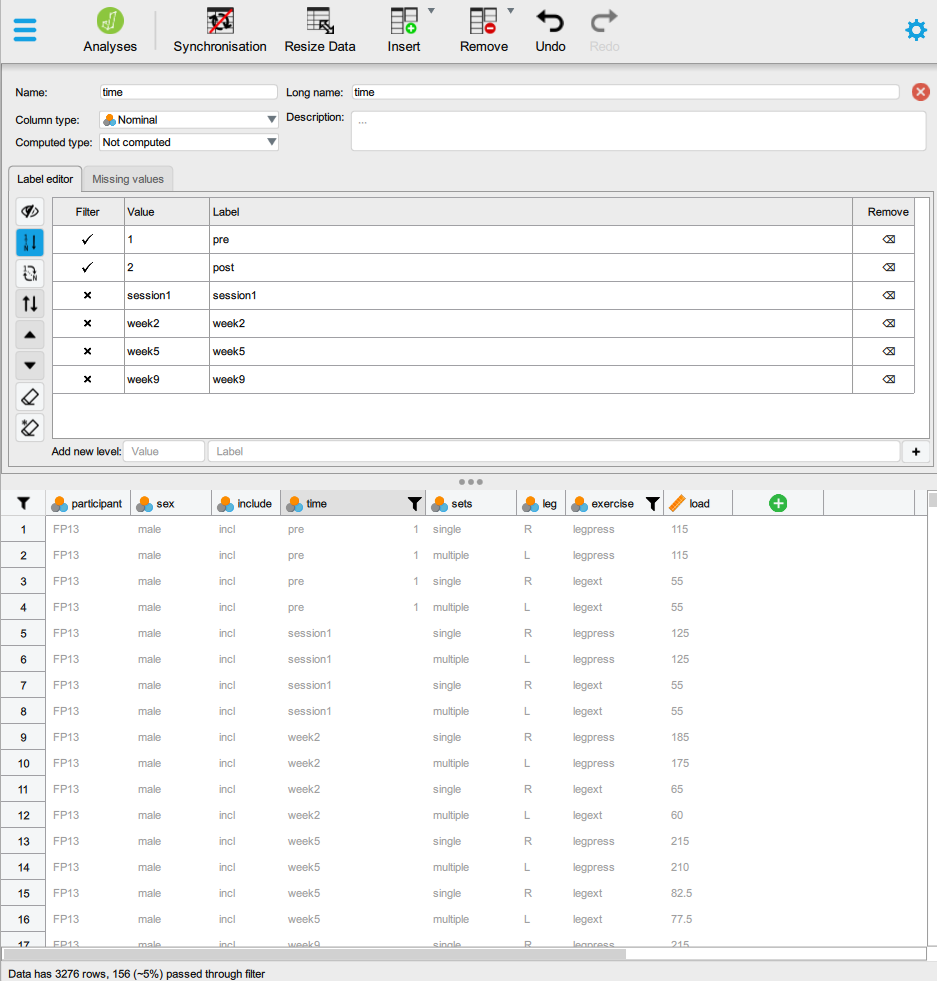
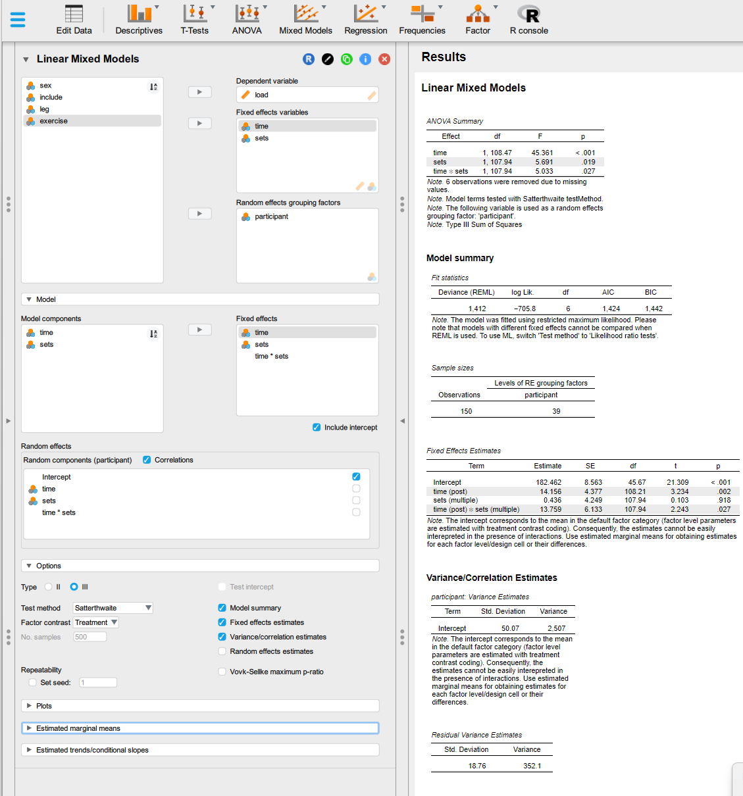
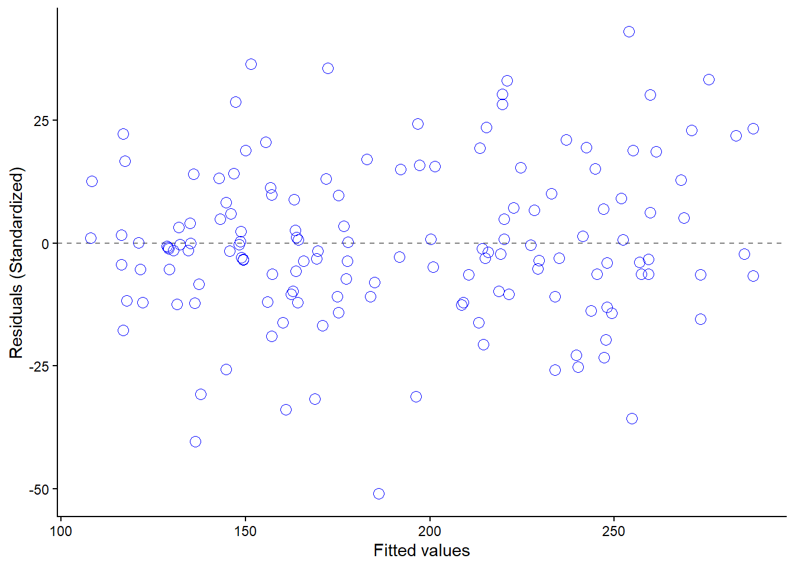
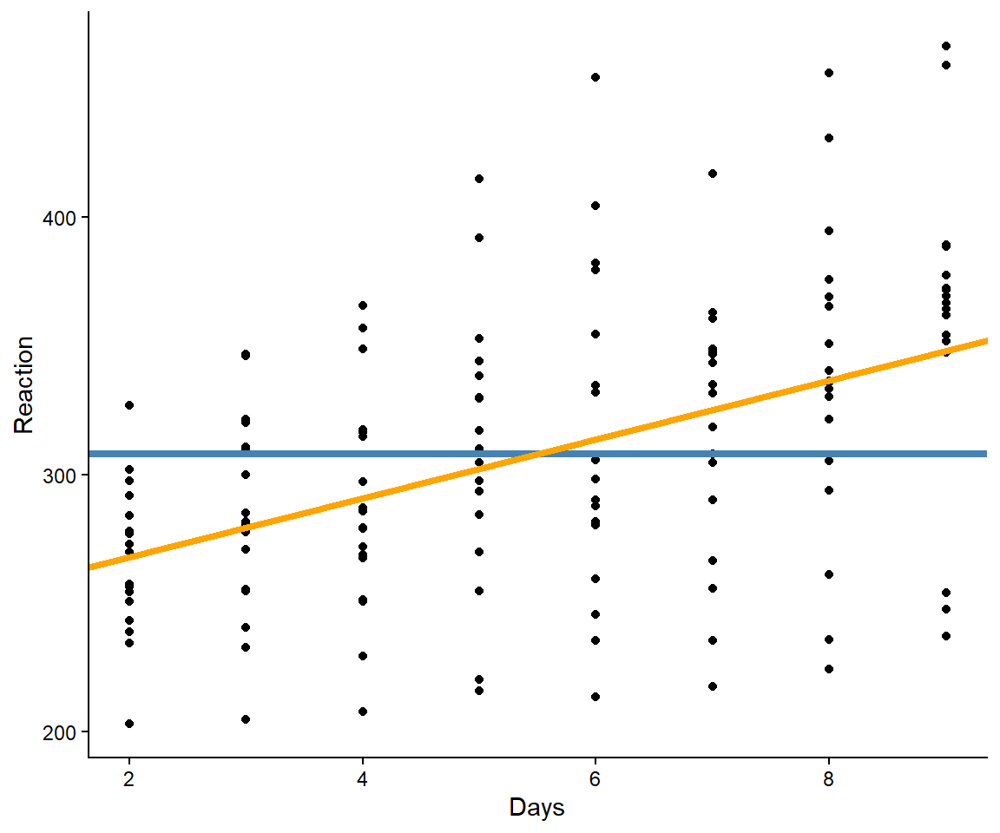
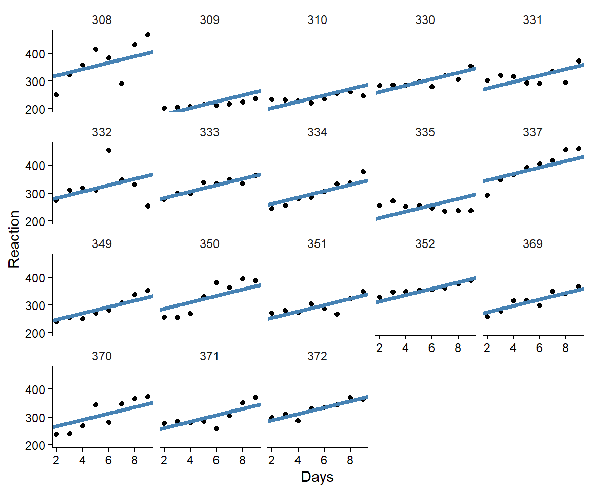
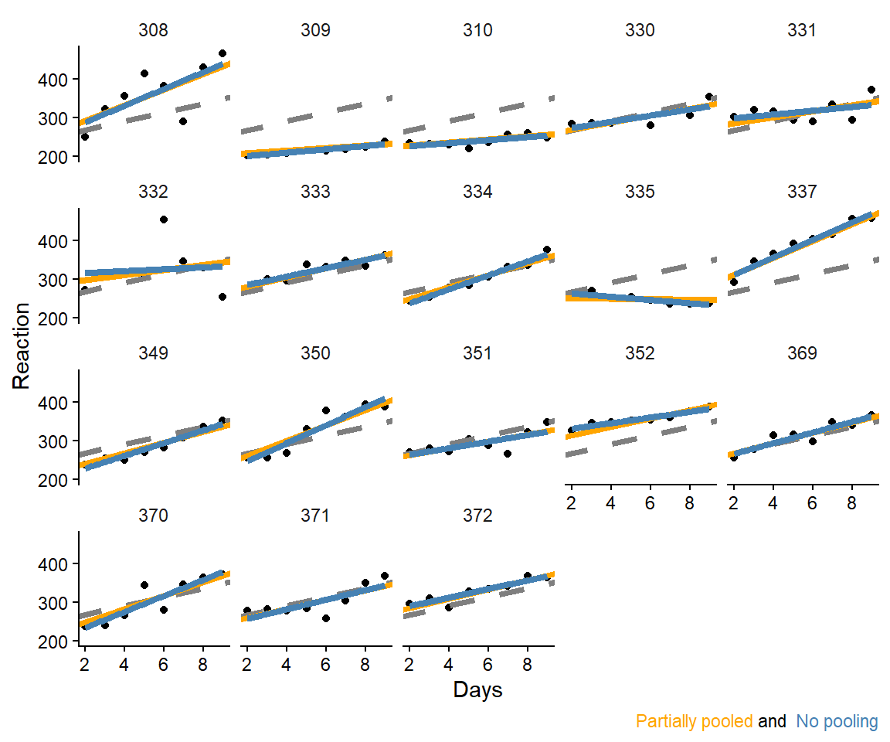
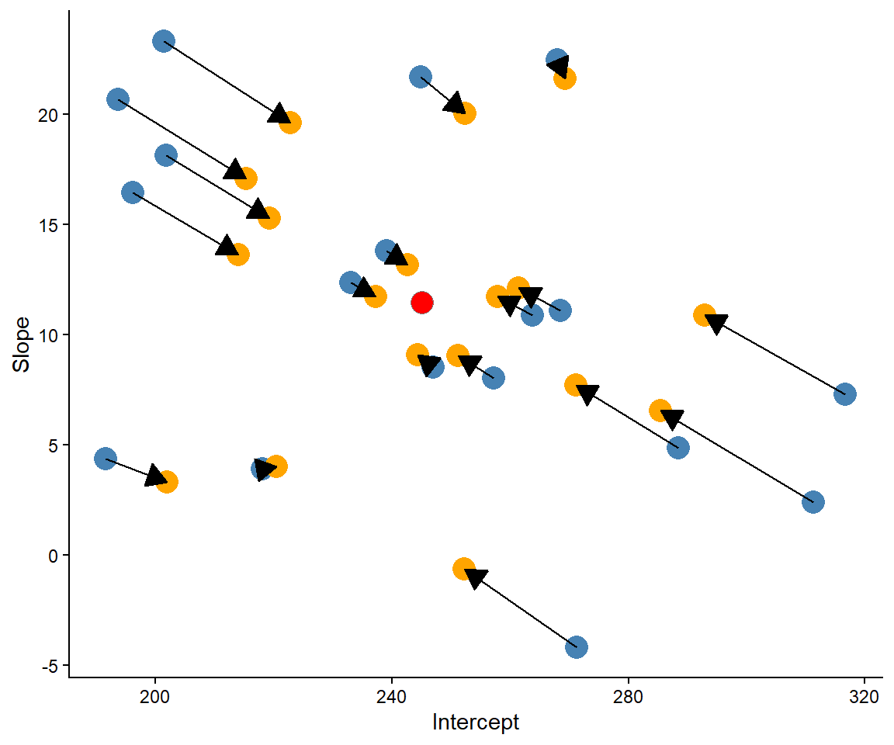

In an ordinary regression model we assume that data points are independent, or unrelated to each other. Here we will briefly talk about mixed effects models (or linear mixed models, or hierarchical models) which are models that can account for non-independence between data-points, meaning that we can fit a model for correlated data. This is advantageous when we want to analyze data where the same participants have been measured multiple times (repeated measures designs).
Traditionally this has been done using repeated measures analysis of variance (repeated measures ANOVA). One might say that this is an outdated technique as the modern mixed effects model is more flexible and robust as it allows for e.g. unbalanced data (e.g. different number of participants in each group), missing data and more complex model formulations.
The mixed effects model can be extended to other problems under the framework of generalized linear models that brings further flexibility as data from different distributions can be modeled.
12.1 The model
A mixed model contains two kinds of “effects”. In our previous models (fitted with lm() in R), we have dealt with “fixed effects”, these are the population-level effects that we try to estimate. This can be the difference between groups, or the slope in a model where we try to explain VO2max with height. In the mixed model, we also include “random effects”. In the simple case we can think of these as a separate starting point in the model for each participant. This simple case is called a model with random intercepts. Why random? This is because we can think of these effects as sampled from a population of possible effects. A fixed effect on the other hand have fixed (population) values. These names are confusing, and there are multiple alternatives. One alternative that might be more intuitive is varying effects. A slope in a regression can have an average but the effect is varying between individuals (or clusters) in the data.
In our first model, we will estimate population averages over two time-points and training conditions. The key questions is if the two groups change differently over time. This estimand1 is fixed by design in the study, but participants has been sampled at random.
1 A target for our estimation. In this case, two groups have been performing two different training conditions. We are interested in the difference in change over time. The design allows us to use the interaction effect as our target quantity, our estimand.
Software. In R we will use the function lmer() from the package lme4 to fit mixed effects models. In JASP, mixed effects models that assumes normally distributed errors are built using (classical) Linear Mixed Models in the Mixed Models module.
Hold up! Why use this new stuff, why not just use the ordinary linear model?
Let’s try. But before we do, we should agree that when fitting correlated data (data from the same participants sampled multiple times therefore creating data points “related” to each other) we violate an assumption of the ordinary linear model, the assumption of independence.
In this example we will use the tenthirty data set. Let’s start by fitting a model where we try to estimate the difference between groups over time using an ordinary regression model. The model can be described as:
library(tidyverse)library(exscidata)dat <- tenthirty |>filter(exercise =="legpress", time %in%c("pre", "post")) |># fix the order of the time factormutate(time =factor(time, levels =c("pre", "post"))) |>print()# Fit the modellm1 <-lm(load ~ time * group, data = dat)summary(lm1)
The model formulation estimates four parameter values. The intercept is the mean in the 10RM group at baseline (pre). timepost is the mean in the 10RM group at time-point post. groupRM30 is the difference at baseline between groups. The model formulation contains an interaction, meaning that the two groups are allowed to change differently between time-points and timepost:group30RM is the difference between groups at time-point post when taking the difference at baseline into account. This is the coefficient of interest in this study (the estimand). We want to know if the difference from pre- to post-training differs between groups, we can assess this by testing if the difference is smaller or greater than zero.
Table 12.1: Estimates from an regression model that do not account for correlated data.
Parameter
Estimate
SE
(Intercept)
273.93
20.04
timepost
75.40
28.88
groupRM30
7.61
28.88
timepost:groupRM30
−40.57
42.16
We can see that we estimate the difference in the interaction term (timepost:group30RM) to about -40 units (Table 12.1). However, this difference is associated with a lot of uncertainty as seen in the large standard error.
Now we will fit a mixed effects model. We can describe our mixed-effects model as:
The addition to the model is \(b_{0[i]}\), these are participant-level intercepts or participant level deviations from the group-level average intercepts. We assume that these deviations come from a normal distribution which is centered at 0 with a standard deviation of \(\sigma_b\). The variation between participant-level intercepts (\(\sigma_b\)) is estimated from the data.
R code
# Load package lme4library(lme4)# Fit the modellmer1 <-lmer(load ~ time * group + (1|participant), data = dat)summary(lmer1)
Table 12.2: Parameter estimates from a model accounting for correlated data with a participant-level intercept term.
Parameter
Estimate
SE
(Intercept)
273.93
19.68
timepost
77.10
11.26
groupRM30
7.61
28.37
timepost:groupRM30
−39.43
16.61
sd__(Intercept)
67.79
NA
sd__Observation
28.79
NA
From the fixed effects part of the summary, we can see that the uncertainty around the estimates differs from the ordinary linear model. The interaction parameter has a lot less variation associated with it, the SE is less than half of the parameter estimate (Table 12.2). The smaller standard errors is a result of telling the model that the same individuals are measured at both time-points. A lot of the unexplained variation in the ordinary linear model is explained by the difference between participants at baseline. We have added this information to the model through its random effects part. We can see from the model summary (sd__(Intercept)) that the estimated standard deviation of participants intercepts at baseline is about 68 units. The random effect has a mean of zero and some estimated standard deviation, in this case the average deviation from zero is 68.
In this comparison we have seen that the mixed effects model is more powerful by accounting for correlated data. The extra power comes from the ability of the model to move variation from the unexplained part of the model to the differences between intercepts among participants.
12.1.1 Effect of training volume on isokinetic strength
The complete strengthvolume data set (see Section 2 or the exscidata package) contains data from a within-participant trial where participants performed two training protocols during the study. Each leg was randomly allocated to either low- or moderate-volume training (see Hammarström et al. 2020). The trial can be analyzed as a cross-over trial using a mixed-effects model. To account for the fact that each participant has performed both training protocols we will add a random intercept per participant. The model can be described as:
Hammarström, Daniel, Sjur Øfsteng, Lise Koll, et al. 2020. “Benefits of Higher Resistance-Training Volume Are Related to Ribosome Biogenesis.” Journal Article. The Journal of Physiology 598 (3): 543–65. https://doi.org/10.1113/JP278455.
We can fit this model in R and JASP. In R we can use lmer from the lme4 package. First we need to organize the data by filtering observations to only retain pre and post time-points.
R-code
# Load packageslibrary(lme4)library(tidyverse)library(exscidata)# Filter and store a data setdat <- strengthvolume %>%# Filter data set only to include...filter(exercise =="isok.60", # Isokinetic data time %in%c("pre", "post")) %>%# time points pre and post# fix the order of time factor# fix the order of the volume condidition factormutate(time =factor(time, levels =c("pre", "post")), sets =factor(sets, levels =c("single", "multiple"))) |>print()# Fit the modelm2 <-lmer(load ~ time * sets + (1|participant), data = dat)summary(m2)
In JASP we can similarly first filter our data by clicking on relevant data variables and add filters. Notice that we might need to modify values of variables to sort them in the right order. This can be done by manually code the values of relevant

Next we can use the Mixed Models module and select Linear mixed models to build the model. Notice in the figure below that the fixed effects contain the interaction effect we want. To get this effect we need to select both effects in Model components (ctrl + click) and add them to Fixed effects. Notice also that this will create multiple Random effects and assume correlations among them, we will keep it simple here and only model participant-level intercepts.
Under options we can set Factor contrast to “Treatment” to get the coding of factor variables that our model description above suggest. To get estimates we can select Fixed effects estimates and Variance/correlation estimates.
From the model we learn that the higher volume (moderate volume or three sets per exercise) leads to a 13.8 unit higher increase in strength over time. We also learn that participants vary at baseline by an average of 50 units.

Figure 12.1: Fit a mixed-effects model in JASP
12.1.2 Interpreting the model
Table 12.3: Estimates from a mixed-effects model of the effect of training volume on strength.
Parameter
Estimate
SE
(Intercept)
182.46
8.56
timepost
14.16
4.38
setsmultiple
0.44
4.25
timepost:setsmultiple
13.76
6.13
sd__(Intercept)
50.07
NA
sd__Observation
18.76
NA
When interpreting the model output (Table 12.3) we can read the intercept as the mean in the reference group (single-set) at time pre. The second parameter, timepost tells us the average change from preto post in the reference sets condition. setsmultiple is the difference at baseline between conditions and timepost:setsmultiple is the difference between single-set and multiple-set at time-point post when accounting for the difference at baseline. This is the parameter of interest in this model (and study). We want to know if the change from pre to post differs between conditions, we can assess this by interpreting the estimate and its uncertainty.
12.1.3 Assessing model assumptions
Our model assumes that residuals are normally distributed around 0 and that they do not differ across fitted values. A valuable graphic is a residual plot showing the (standardized) residuals against fitted values (Figure 12.2). In these kinds of plots we look patterns of an uneaven distribution of errors across fitted values.

Figure 12.2: A residual plot showing no indication of heteroscedasticity.
12.2 Shrinkage – an additional benefit of mixed effects models
A mixed effect model does more than just account for participant-level effects, or more generally, varying effects between clusters. By modelling the distribution of varying effect, the model can learn about a collection of participants (or clusters) and use this information when modelling the next participant (or cluster). This induces a statistical phenomenon called shrinkage. As it turns out, by borrowing information from the whole distribution of clusters we can estimate each cluster a little bit better.
A famous example of this phenomenon is using batting averages in baseball (Efron and Morris 1975). Let’s say that we know the batting averages of baseball players from the first half of a season. We can calculate these by dividing the number of hits by the number of attempts. The resulting ratio should be something like 0.235 or closer to the highest recorded value of 0.406. The average after half a season could be considered as a reasonable guess of the full season batting average. However, it turns out that if we allow for very high scoring players, and low scoring players to move closer to the average of all players we will, on average, estimate individual players with greater precision than just taking their averages. Technically, observed averages can be shrunken towards the average using a technique that punish extreme values more than less extreme values.
Efron, Bradley, and Carl Morris. 1975. “Data Analysis Using Stein’s Estimator and Its Generalizations.”Journal of the American Statistical Association 70 (350): 311–19. https://doi.org/10.1080/01621459.1975.10479864.
In a mixed effects model we allow for the model to shrink cluster specific effects. This is sometimes called partial pooling. In the next example we will see how the mixed-effects model is doing partial pooling of participant-level intercepts and slopes.
12.2.1 Sleep restriction and reaction times
In a study, participants had their reaction times in a series of tests recorded over 10 days. Each night, participants were deprived of three hours of sleep (Bates et al. 2015).2 On average, the reaction time was about 308 ms. However, the average increases as a function of sleep deprevation (Figure 12.3).
Bates, Douglas, Martin Mächler, Ben Bolker, and Steve Walker. 2015. “Fitting Linear Mixed-Effects Models Using Lme4.”Journal of Statistical Software 67 (1): 48. https://doi.org/10.18637/jss.v067.i01.
2 The sleepstudy data set is available in the lme4 package.

Figure 12.3: Average reaction time as a function of days of sleep deprevation.
Using an ordinary regression model we could describe the line displayed in Figure 12.3 as:
But the data set contains more information. We could essentially model all participants individual regression lines as participants have been tracked over all ten days. We could start by adding participant-level intercepts (Figure 12.4). The model is expanded with the varying intercepts per participants: \(y_i = \beta_0 + \beta_1 \text{Days}_i + b_{0~ij}\).

Figure 12.4: Average reaction time as a function of days of sleep deprevation and different intercepts per participant.
The extended model have captured the fact that participants starts at different reaction times. Next we could allow the model to account for different slopes per participants. The new model looks like this:
The varying intercepts (\(b_{0~ij}\)) gives each participant a separate starting point and the varying slopes (\(b_{1~ij}\)) provides each participant a separate slope parameter. When we fit this model in our computer software we also assume
\[
\begin{bmatrix}
b_{0i} \\
b_{1i}
\end{bmatrix}
\sim N\left(
\begin{bmatrix}
0 \\
0
\end{bmatrix},
\begin{bmatrix}
\tau^2_{00} & \tau_{01} \\
\tau_{01} & \tau^2_{11}
\end{bmatrix}
\right)
\] This means that the random effects are multivariate normal with zero averages. The multivariate normal distribution contains variances and co-variances, the two varying effects are modeled as being correlated. A non-technical description of the model is that the variances (or standard deviations) of the varying effects allows for the model to borrow information between clusters. Additionally, knowing the value of the intercept could inform the model about the value of the slope for a participant. Together this will induce shrinkage in the model.
We can create a figure of the resulting participant-level estimates and compare them to a model which is ignorant to other participants when estimating intercept and slopes in each participant (Figure 12.5)

Figure 12.5: Average reaction time and reaction time with and different intercepts and slopes per participant. Compared to participant-level model without partial pooling of effects.
The sharing of information across participants leads to shrinkage of the varying (random) effects. The shrinkage is greater for observations that are far from the center, more extreme values are more aggressively shrunken (Figure 12.6). On average, this is a good thing, because the model will on average be more correct compared to a model that trust extreme values.

Figure 12.6: Shrinkage of varying effects.
The full model estimates are displayed in Table 12.4. From this model we learn that the average effect of sleep deprevation is 11.4 ms per day. However, this effect varies between participants by, on average, 6.8 units. There is also some variation between participants in their baseline reaction times. Baseline reaction times varies with and standard deviation of 31.5. The correlation between intercepts and slope is -0.3, meaning that model learns something (not zero) from the combination of the two varying effects.
Table 12.4: Estimates from a varying slopes and intercepts model of reaction times after sleep deprevation.
Parameter
Estimate
SE
(Intercept)
245.10
9.26
Days
11.44
1.85
sd__(Intercept)
31.51
NA
sd__Days
6.77
NA
cor__(Intercept).Days
−0.25
NA
sd__Observation
25.53
NA
12.2.2 When mixed effects models fail
In the first examples in this chapter we only had limited data per cluster, this means that we cannot estimate the participant-specific effects since there is no data. A simpler model that contains only a random intercept may still be possible. When we do not have a lot of data, or a very complex model, the software may experience problems. This can lead to a situation where we are not able to fit a model. Again, a simpler model might still be possible.
Mixed effects models are complicated machines. Making them simpler removes a lot of their flexibility and strengths. This becomes evident in software such as JASP that does not allow for the flexibility of R.